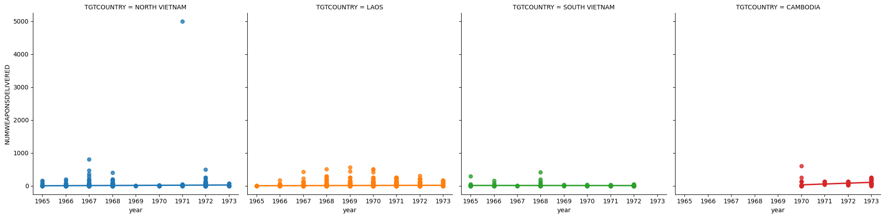

import pandas as pd
import numpy as np
import seaborn as snsExploratory Data Analysis of the THOR Dataset in Seaborn
Extra Writeups
Colab Link
(1) Lab Background
(1.1) The Vietnam / Second Indochinese War
A massive bombing campaign in Cambodia. Anything that flies on anything that moves.
–Henry Kissinger, US National Security Advisor, Dec. 9, 1970.
In 1965, the United States launched Operation Rolling Thunder, a years-long aerial assault on Vietnam which devastated the country and its people (killing over 3 million), irreversably damaging its environment (with more extensive use of chemical weapons like Napalm than in any war before or since), its crops and forests (with 19 million gallons of Agent Orange sprayed over 500,000 acres of crops and 5 million acres of forests), and its infrastructure. As a campaign of genuinely unprecedented ferocity and destruction launched by a military superpower against a poor, mostly rural/agrarian country (only 20% of its citizens lived in cities at the time), its devastating effects are still felt to this day by those in Vietnam, Laos, and Cambodia.
(All of which is all my not-so-subtle chance to plug, before moving onto the data analysis, the donation page for the HALO Trust: an org headquartered right here in NW DC which is leading the worldwide effort to defuse unexploded landmines in these countries, where for example 50,000 Laotians have been killed by these mines since the war “officially” ended)
(1.2) The Role of Data Science in the Devastation
As an example of a war where modern science and technology was seen as a central military resource (with chemistry research leading to the deployment of Agent Orange and Napalm, computer science research used to track and target individuals via early instances of machine learning models, and social science research used to e.g. justify driving villagers from their homes into concentration camps called “Strategic Hamlets”), it is an important piece of history for data scientists to grapple with: how the technologies we develop could be used to help people, but also could be used to inflict unimaginable horrors upon millions of innocent civilians. Datasets pertaining to this war, many of which have only become publicly/easily-available in the past few years, provide the perfect opportunity to use data science itself to study this example of a military “data science project” of a prior generation.
(1.3) EDA and Bayesian Statistics: Challenging Prior Beliefs to Derive Posterior Beliefs
Although the entire point of EDA in theory is to go in “without any assumptions” (but see below/slides), I’ll give a quick summary of the impression(s) I came away with after the cleaning, tabulating, and visualizing below, in combination with what I knew about it beforehand, so (a) you know what to expect going in and/or (b) so you can use it as a “prior” that you update while working through the visualizations (challenging received assumptions, rather than pretending we have none, should be the goal of EDA imo!)
Briefly: although Operation Rolling Thunder is often cited as the beginning of what people in the US usually call the “Vietnam War”, by looking at the basic collection of tabulations and visualizations herein it slowly emerges that probably the most horrifying and unprecedented destruction was experienced not even by those in Vietnam itself but by those in Laos over the timespan represented in the dataset (and, after a US-sponsored coup in 1970, Cambodia as well). I knew beforehand, for example, that Laos was the most-bombed (per square meter) territory in history, but in terms of the goals of EDA I definitely found my priors about the Vietnam War challenged by what the tables/plots seemed to be “saying” about the underlying historical event.
As a final piece of information to have as part of your prior knowledge, though, before we dive in: Keep in mind that although the numbers we’ll be examining are mostly in absolute units such as the number of bombings, they should be interpreted in the context of the relative populations of each country in the dataset, at the beginning of the campaign:
| Country | Population | Year | Source |
|---|---|---|---|
| Cambodia | 6.2 million | 1965 | World Bank |
| Laos | 2.4 million | 1965 | World Bank |
| Democratic Republic of Vietnam (North Vietnam) |
17.7 million | 1965 | CIA Intelligence Report (via CREST), 1966, p. 26 |
| Republic of Vietnam (South Vietnam) |
16 million | End of 1964 | CIA Intelligence Report (via CREST), 1968, p. 11 |
(1.4) Dataset Info
The dataset we’ll be analyzing is called the Vietnam War Theater History of Operations (THOR) dataset, released by the US Department of Defense in 2015. The raw data is too large (~1.5GB) to easily download and work with, so I’ll be using a reduced-form version below, but the full dataset is available at the previous link (from data.world).1
(2) Loading the Data
As you should slowly be getting in the habit of doing, we start by importing:
- Pandas (for dataset storage and manipulation),
- NumPy (for any mathematical transformations we might want to apply), and
- Seaborn (for visualization, whether EDA-focused or otherwise)
Next we download the dataset. Technically Pandas’ read_csv() function does support URL arguments, so that we could load the dataset directly into Pandas via URL, but since we often open and close notebooks, or Jupyter crashes, to avoid re-downloading each time you can run the following line, which should download the .csv file into the same directory as wherever this notebook is stored (on Colab, for example, the same portion of your Google Drive that Colab allocates for the storage of the notebook).
Since we’ve already used Python’s requests library before, for data scraping, we’ll use that here to quickly request and save the file:
import requests
thor_url = "https://jpj.georgetown.domains/dsan5000-scratch/eda/thor_strikes.csv"
with open("thor_strikes.csv", 'wb') as outfile:
csv_content = requests.get(thor_url, stream=True).content
outfile.write(csv_content)If the download was successful, you should have a thor_strikes.csv file in the same folder as this notebook (in Colab you can check the file tab in the sidebar on the left side of the page). We can then use pd.read_csv() to load the .csv-formatted dataset, and we can re-load the dataset again in the future without having to worry about re-downloading it.
strike_df = pd.read_csv("thor_strikes.csv")Another good habit you can get into is always checking the output of the .head() function after loading the dataset, just to make sure that everything loaded as you expected. It usually doesn‚Äôt (üòÖ)
strike_df.head()| MFUNC_DESC | MISSIONID | TGTCOUNTRY | THOR_DATA_VIET_ID | MSNDATE | SOURCEID | NUMWEAPONSDELIVERED | TGTTYPE | TGTLATDD_DDD_WGS84 | TGTLONDDD_DDD_WGS84 | |
|---|---|---|---|---|---|---|---|---|---|---|
| 0 | STRIKE | 1047 | LAOS | 4 | 1970-02-02 | 642780 | 2 | TRUCKS | 16.902500 | 106.014166 |
| 1 | STRIKE | 1407 | LAOS | 6 | 1970-11-25 | 642782 | 6 | AAA\37MM CR MORE | 19.602222 | 103.597222 |
| 2 | STRIKE | 9064 | LAOS | 7 | 1972-03-08 | 642783 | 0 | TRUCKS | 14.573611 | 106.689722 |
| 3 | STRIKE | 8630 | LAOS | 16 | 1971-05-12 | 642792 | 4 | TRK\PRK\STORE AREA | 17.563611 | 105.756666 |
| 4 | STRIKE | 1391 | LAOS | 18 | 1971-12-19 | 642794 | 0 | PERSONNEL\ANY | 16.864166 | 105.349166 |
In our case, though, the output looks pretty much as expected, in terms of Pandas being able to automatically detect the header row and the splits between columns. So, let’s move on to the EDA!
(3) Missing Data
First things first, before we worry about missing data itself, we should think about which variables we want to analyze, since for now we can just worry about checking for missing values within the columns corresponding to these variables.
The official 59-page codebook for the dataset, an absolutely crucial thing to have on hand during any data analysis, can be found at this link. To skip over you having to read a 59-page document, though, I’ll now introduce a shortened, simplified codebook.
In our case, since we’re doing exploratory data analysis, in theory we shouldn’t have any hypotheses in mind yet. In reality we do have hypotheses in our heads, subconsciously at least, so when I say that I just mean that we’re not directly trying to confirm or deny these hypotheses at this stage. We are just hoping to question/interrogate them as we go along…
Keep in mind Tukey’s metaphor, that:
- EDA = detective work, collecting evidence for a future trial, while
- CDA = the trial itself!
I’m just going to focus on a few key variables which are central to understanding the processes underlying the data (the destruction of the countries across former Indochina). Let’s also think about what type of data each column represents—categorical vs. numeric, ordinal vs. cardinal, etc. Just like in the lab we can then use this info, as recorded in the following table, as our codebook for understanding what each variable represents:
| Variable Name | Description | Variable Type | Datatype |
|---|---|---|---|
TGTCOUNTRY |
This should tell us, for a given strike, the country within whose borders the strike was carried out. | Categorical | string |
MSNDATE |
This should tell us the date (in Y/M/D format) that the strike was carried out. | Discrete numeric (date) | object(!) (see below) |
TGTTYPE |
This should tell us the type of target, e.g., whether it was a vehicle, a group of people, an individual person, etc. | Categorical | string |
TGTLATDD_DDD_WGS84 |
The latitude coordinate of the target | Continuous | float |
TGTLONDD_DDD_WGS84 |
The longitude coordinate of the target | Continuous | float |
As our first EDA task, let’s look into the first variable in the table above: TGTCOUNTRY. As the section header suggests, we’re going to see if this column has any missing data and, if so, what the missing data means and what to do about it.
[Crucial point here:] If we started using Pandas methods with their default arguments, we might get to thinking that nothing is wrong here, and move on from missing data checks… Take a look at what the value_counts() function returns when we use this function to look at the distribution of values in TGTCOUNTRY without including any additional parameters:
strike_df['TGTCOUNTRY'].value_counts()TGTCOUNTRY
LAOS 690161
NORTH VIETNAM 245977
SOUTH VIETNAM 54253
CAMBODIA 13271
THAILAND 146
UNKNOWN 23
WESTPAC WATERS 6
Name: count, dtype: int64All seems well from this table: we might think “ok, great, they have encoded the 23 missing values from the original non-digitized data as "UNKNOWN", and all the other values are interpretable non-missing labels, so we’re good right?”
Sadly we‚Äôre NOT GOOD üò≠. Let‚Äôs check one more thing, to slowly move towards the hidden issue here. Let‚Äôs start by summing up the counts that value_counts() has given us for each value:
value_counts_sum = strike_df['TGTCOUNTRY'].value_counts().sum()
value_counts_sum1003837Next let’s take a look at the total number of rows and columns in our DataFrame, by checking the shape attribute
[Here it’s important to note that, unlike most of the other attributes that we use to analyze DataFrame objects, shape is not a function but a static variable, an attribute of the DataFrame object. That’s why we just use .shape rather than .shape() to access this information.]
num_rows = strike_df.shape[0]
num_rows1007674Do you see the issue? If not, let’s check the difference between these two values:
num_rows - value_counts_sum3837This tells us, to our horror, that there are 3,837 rows in our DataFrame which are completely unaccounted-for in the output produced by value_counts() üò∞
And the reason is, as it turns out, the value_counts() function excludes missing values by default, so that the above output actually tells us absolutely nothing about whether or not there are missing values in the column! Scary stuff.
There is an easy fix, however: we can just include the dropna = False argument in our call to the value_counts() function, which will override this default behavior and show missing values as one of the possible values in the table of counts:
strike_df['TGTCOUNTRY'].value_counts(dropna = False)TGTCOUNTRY
LAOS 690161
NORTH VIETNAM 245977
SOUTH VIETNAM 54253
CAMBODIA 13271
NaN 3837
THAILAND 146
UNKNOWN 23
WESTPAC WATERS 6
Name: count, dtype: int64And now we see that, in fact, there are thousands of strikes for which no target country was recorded in the dataset: about 167 times more missing data than we originally thought when we only saw that 23 of the rows had a TGTCOUNTRY value of "UNKNOWN".
So, what can we do about this? In later weeks of the course and/or in later weeks of DSAN5100 we’ll learn about some more advanced methods for inputing missing values, for example by explicitly modeling the data-generating process that led some of the values to be missing. Until we know how to do that, however, for the sake of moving on with the EDA we will ignore these rows when we move onto other EDA tasks, keeping in mind that this is NOT acceptable practice in general for data science, outside of tutorial examples like this!!
Before we move to those tasks, however, let’s quickly look at how we can visualize the distribution of missing values in this column (along with the other columns), using the third-party missingno package mentioned in the lab instructions!
!pip install missingnoCollecting missingno
Using cached missingno-0.5.2-py3-none-any.whl (8.7 kB)
Requirement already satisfied: numpy in /Users/jpj/.pyenv/versions/3.11.5/lib/python3.11/site-packages (from missingno) (1.26.0)
Requirement already satisfied: matplotlib in /Users/jpj/.pyenv/versions/3.11.5/lib/python3.11/site-packages (from missingno) (3.8.0)
Requirement already satisfied: scipy in /Users/jpj/.pyenv/versions/3.11.5/lib/python3.11/site-packages (from missingno) (1.11.2)
Requirement already satisfied: seaborn in /Users/jpj/.pyenv/versions/3.11.5/lib/python3.11/site-packages (from missingno) (0.12.2)
Requirement already satisfied: contourpy>=1.0.1 in /Users/jpj/.pyenv/versions/3.11.5/lib/python3.11/site-packages (from matplotlib->missingno) (1.1.1)
Requirement already satisfied: cycler>=0.10 in /Users/jpj/.pyenv/versions/3.11.5/lib/python3.11/site-packages (from matplotlib->missingno) (0.11.0)
Requirement already satisfied: fonttools>=4.22.0 in /Users/jpj/.pyenv/versions/3.11.5/lib/python3.11/site-packages (from matplotlib->missingno) (4.42.1)
Requirement already satisfied: kiwisolver>=1.0.1 in /Users/jpj/.pyenv/versions/3.11.5/lib/python3.11/site-packages (from matplotlib->missingno) (1.4.5)
Requirement already satisfied: packaging>=20.0 in /Users/jpj/.pyenv/versions/3.11.5/lib/python3.11/site-packages (from matplotlib->missingno) (23.1)
Requirement already satisfied: pillow>=6.2.0 in /Users/jpj/.pyenv/versions/3.11.5/lib/python3.11/site-packages (from matplotlib->missingno) (10.0.1)
Requirement already satisfied: pyparsing>=2.3.1 in /Users/jpj/.pyenv/versions/3.11.5/lib/python3.11/site-packages (from matplotlib->missingno) (3.1.1)
Requirement already satisfied: python-dateutil>=2.7 in /Users/jpj/.pyenv/versions/3.11.5/lib/python3.11/site-packages (from matplotlib->missingno) (2.8.2)
Requirement already satisfied: pandas>=0.25 in /Users/jpj/.pyenv/versions/3.11.5/lib/python3.11/site-packages (from seaborn->missingno) (2.1.0)
Requirement already satisfied: pytz>=2020.1 in /Users/jpj/.pyenv/versions/3.11.5/lib/python3.11/site-packages (from pandas>=0.25->seaborn->missingno) (2023.3.post1)
Requirement already satisfied: tzdata>=2022.1 in /Users/jpj/.pyenv/versions/3.11.5/lib/python3.11/site-packages (from pandas>=0.25->seaborn->missingno) (2023.3)
Requirement already satisfied: six>=1.5 in /Users/jpj/.pyenv/versions/3.11.5/lib/python3.11/site-packages (from python-dateutil>=2.7->matplotlib->missingno) (1.16.0)
Installing collected packages: missingno
Successfully installed missingno-0.5.2I don’t want to give away the answer to this portion of the lab by producing a missing-data matrix directly, so instead I will use a different but still very helpful function from missingno, the msno.bar() function, to visualize missingness across the different variables in our DataFrame:
import missingno as msnomsno.bar(strike_df)<Axes: >
Although we see in hindsight that the visual properties of this plot would not have been that useful in discovering the missing values in TGTCOUNTRY (I say “visual properties” because it still helpfully provides the non-missing counts at the top of each bar, which could have allowed us to see this issue), the plot is very useful for discovering the missingness prevalent in the TGTTYPE variable. So, just like in the case of TGTCOUNTRY, we will move on while keeping in mind that this variable has an even more extreme issue with missingness that will bias our results (until we learn how to explicitly incorporate and de-bias the missingness!)
(4) Different Formats Within The Same Column
(4.1) The Ambiguous object Type
As our next EDA task, let’s look into that (!) in the table above: while the rest of the variables are in fairly unambiguous formats, object is a particularly scary datatype in Pandas, since “object” in fact just means that the datatype of a given value in this column could be anything. If you know Java, for example, you know that Object is the datatype that all other datatypes are subtypes of. Similarly, in Python, every class implicitly inherits the properties of the object class.
Looking at the output of head() from above, however, you may reasonably think that the entries in this column will all be of string type. And this instinct would be further enforced by checking the datatypes of the first five entries in the column:
strike_df['MSNDATE'].head().apply(type)0 <class 'str'>
1 <class 'str'>
2 <class 'str'>
3 <class 'str'>
4 <class 'str'>
Name: MSNDATE, dtype: objectTherefore, you might start moving ahead, working with this column as if it is a string column. You should push back on this instinct!! It will save you so many headaches later on, when you are neck-deep in the data analysis, if you verify what’s going on with any columns that Pandas loaded as object type right at the beginning!
For example, rather than drawing inferences about the entire dataset from only the first five columns (a procedure jokingly referred to as “engineer’s induction”), we can do something a bit less error-prone by making a new column MSNDATE_type which just tells us the type of each value in the MSNDATE column, then checking whether or not every entry in MSNDATE_type is string. If it is, then we’re fine adopting the it’s-a-string-variable assumption and moving on. But if it’s not, we’ll have to do something to handle the mismatch. Let’s see what happens. We’ll make the column, then we’ll use the value_counts() function from Pandas to see the distribution of datatypes in the column (where now we remember that we pretty much always want to include the dropna = False parameter):
strike_df['MSNDATE_type'] = strike_df['MSNDATE'].apply(type)strike_df['MSNDATE_type'].value_counts(dropna=False)MSNDATE_type
<class 'str'> 1007674
Name: count, dtype: int64So far so good: Pandas loaded the column as type object, which often means but does not always mean that the column is filled with string variables. There is still one more issue with this column, however, looming on the horizon…
(4.2) Splitting The Column Into Parts
Since in general we want to analyze the yearly volume of strikes in each country, the format of the values in the MSNDATE column is not that helpful to us at the moment. So, again we might proceed by intuition, using engineer’s induction on the first five rows of the DataFrame to infer that we can just split on the - character to quickly divide this single column into three separate columns: one for year, one for month, and one for day.
Let’s see what happens when we try this out.
Writing the Parse Function
In Python, unlike the nice separate_wider_*() functions in R that I talked about in this writeup, I personally haven’t found all that many helpful functions specially-made for splitting a string up into pieces.
So, what I usually do in this type of situation (but see a few sections below) is utilize the following setup: as a nice “trick” for generating multiple columns from one individual column, Pandas allows you to write functions which return pd.Series objects (these Series objects are sort of like one-dimensional DataFrames), and then use this function to set the values of multiple columns in one “sweep” using syntax like:
def function_returning_series_object(value):
"""
A function that will take in a single value from a column and
return a pd.Series object, where the **keys** in the pd.Series
correspond to the **names of the columns** you're hoping to create
"""
// Do something with `value` to generate these results
resulting_x_value = 'first result'
resulting_y_value = 'second result'
resulting_z_value = 'third result'
series_values = {
'x' = resulting_x_value,
'y' = resulting_y_value,
'z' = resulting_z_value
}
return pd.Series(series_values)
// Specify the names of the columns you're about to create
columns_to_create = ['x','y','z']
// And use the apply() function to "send" the values of some existing column
// to the function_returning_series_object() function defined above
df[columns_to_create] = df['some_existing_column'].apply(function_returning_series_object)In our case, so you can see this in action, let’s define a function that will take in the values of the MSNDATE column (which we expect to have the format YY-MM-DD, split these values on the - character, and return the three resulting pieces in pd.Series form with the keys year, month, and day.
def split_date(date_val):
date_elts = date_val.split("-")
date_values = {
'year': date_elts[0],
'month': date_elts[1],
'day': date_elts[2]
}
return pd.Series(date_values)Quick Note: tqdm
When we use the apply() function from Pandas to apply our split_date() function to each value of the MSNDATE column, it will take kind of a long time to iterate through and parse each date. For this reason, I’m including example code here showing how to import and use the third-party Python library tqdm to create a new progress_apply() function. If the waiting feels tedious on your machine, for example, you can call progress_apply() in the place of apply(), which will display a progress bar showing far along it is. In Colab this will work right away, since tqdm comes pre-installed. Depending on your environment it may crash though, since some versions of tqdm are incompatible with some versions of pandas, so to be safe I’m sticking with the regular .apply() function
from tqdm.notebook import tqdm
tqdm.pandas()Back to EDA
The running time of the progress_apply() call will be bad enough, but as we’ll see, it gets even worse: right near the end, about 63% of the way through, the code will crash with an error! (You can uncomment the following code, run it, and wait a bit to see the error if you’d like, or just jump past the following cell)
## And apply it to MSNDATE
#columns_to_create = ['year','month','day']
#strike_df[columns_to_create] = strike_df['MSNDATE'].progress_apply(split_date)The error looks like:
<ipython-input-35-ec79f5e7def4> in split_date(date_val)
3 date_values = {
4 'year': date_elts[0],
----> 5 'month': date_elts[1],
6 'day': date_elts[2]
7 }
IndexError: list index out of rangeSo what happened?
Long story short, engineer’s induction failed us again. It turns out that some entries within the MSNDATE column contain dates in a different format from the format we saw in the first 5 rows of the dataset. But how did I magically figure this out?
Let’s start by carrying out Engineer’s Induction 2.0 (TM), by looking at the tail of strike_df rather than the head. Sometimes, if the column has one format at the beginning, but another near the end, this will show us the alternative format:
strike_df.tail()| MFUNC_DESC | MISSIONID | TGTCOUNTRY | THOR_DATA_VIET_ID | MSNDATE | SOURCEID | NUMWEAPONSDELIVERED | TGTTYPE | TGTLATDD_DDD_WGS84 | TGTLONDDD_DDD_WGS84 | MSNDATE_type | MSNDATE_dashcount | MSNDATE_len | |
|---|---|---|---|---|---|---|---|---|---|---|---|---|---|
| 1007669 | STRIKE | 1405 | LAOS | 4559448 | 1973-01-01 | 58102 | 0 | PERSONNEL\ANY | 15.191111 | 106.206666 | <class 'str'> | 2 | 10 |
| 1007670 | STRIKE | 8719 | LAOS | 4560531 | 1972-05-08 | 68563 | 0 | NaN | 16.758055 | 106.461944 | <class 'str'> | 2 | 10 |
| 1007671 | STRIKE | 9526 | SOUTH VIETNAM | 4561255 | 1972-07-10 | 69287 | 0 | NaN | 16.684166 | 107.053888 | <class 'str'> | 2 | 10 |
| 1007672 | STRIKE | 0692 | LAOS | 4650354 | 1970-11-28 | 527864 | 0 | TRUCKS | 17.286388 | 105.609722 | <class 'str'> | 2 | 10 |
| 1007673 | STRIKE | 7232 | LAOS | 4651825 | 1971-10-19 | 541658 | 4 | NaN | 15.292777 | 107.137500 | <class 'str'> | 2 | 10 |
We’re not so lucky this time. The last 5 values of the MSNDATE column look like they’re formatted the same way as the first 5 values are.
So, next let’s do something a bit smarter, and just check how many - characters each entry has—we can code this check in a very similar way to how we coded the check above when we looked at the type of each entry in the column.
In fact, here we don’t even need to come up with our own function and use apply() or anything like that, since Pandas has built-in functionality allowing us to access (by using the .str suffix after extracting just the string-format column) any of Python’s built-in functions for strings, like len() or replace(), at which point Pandas will then automatically apply our chosen to each value in the column.
So, let’s use this .str suffix to apply the built-in count() function (that Python provides for all string objects) to each value of MSNDATE, counting the number of times that - appears in each value, then look at the distribution of these counts across the entire column:
strike_df['MSNDATE_dashcount'] = strike_df['MSNDATE'].str.count("-")strike_df['MSNDATE_dashcount'].value_counts()MSNDATE_dashcount
2 993524
0 14150
Name: count, dtype: int64And we’ve found our issue: 14,150 of the rows do not use a YYYY-MM-DD format! Since we now have this MSNDATE_dashcount column available to use, let’s filter the full DataFrame to look at just (the first few) rows where it is equal to 0, i.e., rows where the MSNDATE column does not contain any dashes:
strike_df.loc[strike_df['MSNDATE_dashcount'] == 0,].head()| MFUNC_DESC | MISSIONID | TGTCOUNTRY | THOR_DATA_VIET_ID | MSNDATE | SOURCEID | NUMWEAPONSDELIVERED | TGTTYPE | TGTLATDD_DDD_WGS84 | TGTLONDDD_DDD_WGS84 | MSNDATE_type | MSNDATE_dashcount | MSNDATE_len | |
|---|---|---|---|---|---|---|---|---|---|---|---|---|---|
| 639026 | STRIKE | JH301 | SOUTH VIETNAM | 2876015 | 19700409 | 258195 | 12 | AREA\DEPOT | 14.825953 | 107.716270 | <class 'str'> | 0 | 8 |
| 639027 | STRIKE | JH309 | SOUTH VIETNAM | 2876638 | 19700216 | 262548 | 24 | AREA\DEPOT | 14.510215 | 108.768815 | <class 'str'> | 0 | 8 |
| 639028 | STRIKE | 01305 | SOUTH VIETNAM | 2876852 | 19651029 | 221263 | 0 | UNKNOWN\UNIDENTIFIED | 10.186505 | 106.229604 | <class 'str'> | 0 | 8 |
| 639029 | STRIKE | JG402 | SOUTH VIETNAM | 2877103 | 19701114 | 219532 | 24 | AREA\DEPOT | 16.331801 | 107.012509 | <class 'str'> | 0 | 8 |
| 639030 | STRIKE | J8012 | LAOS | 2877181 | 19700721 | 219801 | 48 | TRUCK PARK\STOP | 16.286964 | 106.922250 | <class 'str'> | 0 | 8 |
And we see that, to our relief, the issue isn’t so bad: if engineer’s induction does hold for this situation, then (hopefully) we can split those 14,150 rows without any dashes by just taking the MSNDATE values in these rows and directly extracting the first 4 characters as the year, the next 2 characters as the month and the final 2 characters as the day. As an additional sanity check here, since we are using engineer’s induction, we can check the full range of possible lengths of the MSNDATE values:
strike_df['MSNDATE_len'] = strike_df['MSNDATE'].str.len()
strike_df['MSNDATE_len'].value_counts()MSNDATE_len
10 993524
8 14150
Name: count, dtype: int64And we see another encouraging sign: that there is not (for example) some third length that the values of this column can have, that we’d need to worry about on top of the two different formats we’ve found
(There still could be more than two formats, if the additional formats happened to produce date strings with length 8 or 10, but we’ll worry about that if we experience more issues with splitting MSNDATE under the assumption of two formats)
Re-Coding the Date Parsing Function: v2.1
So let’s make an updated version of our split_date() function, which explicitly checks whether the date it is given is encoded in the 8-character or 10-character format, and does the splitting accordingly:
def split_date_v2_1(date_val):
if len(date_val) == 10:
# Do what we did before, using .split()
date_elts = date_val.split("-")
date_values = {
'year': date_elts[0],
'month': date_elts[1],
'day': date_elts[2]
}
else:
# Assume it is in YYYYMMDD format, so that we can
# just extract substrings to obtain Y, M, and D
date_values = {
'year': date_val[0:4],
'month': date_val[4:6],
'day': date_val[6:8]
}
return pd.Series(date_values)And now we could run this using the same .apply() code as before, to see if it successfully parses the column. In the first version of the writeup I did run it, but it took about ~5 minutes, which is too long for a reasonable quick-learning writeup, imo! (You could just go ahead and create a cell containing the following code, and run it, if you are ok waiting for 5mins:)
columns_to_create = ['year','month','day']
strike_df[columns_to_create] = strike_df['MSNDATE'].progress_apply(split_date_v2)For me, though, 5 minutes is too slow, so here is a screenshot of the output after this call to progress_apply() has finished:
![](.png)
Another Quick Note: swifter
Like last time, this may take a while to complete: cases like these are where I hightly recommend using tqdm, at a minimum!
There is also the third-party library swifter, which would be nice for the kinds of embarrasingly parallel tasks we’re applying to the column here, except that (as far as I can tell) swifter is only able to provide speedups for numeric operations :/ I thought I’d mention it here, however, since if you are doing some numeric operation that’s taking this long, you might try seeing if swifter will speed up your code!
And as an example of the vast differences that can arise between efficient and inefficient versions of processing code, even in EDA: since I really only need to extract the year (rather than the three elements of each date) for the remaining analysis, for speed I used the following lambda function instead, which just scoops out the first 4 characters of the MSNDATE value (which works because, in either format, the first 4 characters of the string contain the year), and it took approximately 1 second to finish:
# Depending on your Jupyter environment, you may need to install/update the
# `ipywidgets` library for `tqdm` to work correctly
#!pip install ipywidgets# progress_apply() version (with progress bar)
#strike_df['year'] = strike_df['MSNDATE'].progress_apply(lambda x: x[0:4])
# apply() version
strike_df['year'] = strike_df['MSNDATE'].apply(lambda x: x[0:4])Finally, now that we’ve extracted just the year of the mission into its own column, let’s convert that column from string format into int format. There are a lot of ways to do this type of conversion, but for me the pd.to_numeric() function is most useful for several reasons, so I’ll use that:
strike_df['year'] = pd.to_numeric(strike_df['year'])And as we can see by checking the .dtypes attribute (as with shape, remember that dtypes is not a function!), year now has the int64 (64-bit integer) format, as we wanted:
strike_df.dtypesMFUNC_DESC object
MISSIONID object
TGTCOUNTRY object
THOR_DATA_VIET_ID int64
MSNDATE object
SOURCEID int64
NUMWEAPONSDELIVERED int64
TGTTYPE object
TGTLATDD_DDD_WGS84 float64
TGTLONDDD_DDD_WGS84 float64
MSNDATE_type object
MSNDATE_dashcount int64
MSNDATE_len int64
year int64
dtype: object(5) Collapsing Messy Categorical Variables Into Clean Ones
The one variable we should still look at is TGTTYPE: although we already saw how messy it was in the sense of having lots of missing values, it turns out that it is also messy in the sense of having lots and lots of potential values, some of which are very similar but not identical, so that (for example) trying to include this variable as a “factor variable” in a cross-tabulation or a two-way plot (see below) would result in a very messy plot with too many bars/lines/colors/etc.
This becomes clear if we run the following code, showing that there are 235 possible values that this categorical variable can take on:
strike_df['TGTTYPE'].value_counts()TGTTYPE
AREA\DEPOT 118271
MOTOR VEHICLE 108533
TRUCK PARK\STOP 77840
ROAD 60494
ANTI-AIRCRAFT 52870
...
AMMO BLDG 1
CP 1
MOUNTAIN PASS 1
SAM OXIDIZER 1
MIG19 1
Name: count, Length: 235, dtype: int64Since we’re focusing on EDA and visualization, though, let’s treat this value_counts() table as a “mini-dataset” and generate an EDA-style visualization of how many instances of each possible category actually appear in the broader dataset. We’ll call this mini-dataset target_dist, since it represents just the counts (and therefore, as a whole, the distribution) of the various possible target-type categories. Note, however, that because value_counts() returns a pd.Series object, not a pd.DataFrame object, we’ll need to explicitly convert its return value into a pd.DataFrame (plus turn the index column into a “regular” column and rename it from index into something more informative) in order to use it with Seaborn.
target_dist_df = pd.DataFrame(strike_df['TGTTYPE'].value_counts()).reset_index()
target_dist_df.columns = ['TGTTYPE_val','count']
target_dist_df| TGTTYPE_val | count | |
|---|---|---|
| 0 | AREA\DEPOT | 118271 |
| 1 | MOTOR VEHICLE | 108533 |
| 2 | TRUCK PARK\STOP | 77840 |
| 3 | ROAD | 60494 |
| 4 | ANTI-AIRCRAFT | 52870 |
| ... | ... | ... |
| 230 | AMMO BLDG | 1 |
| 231 | CP | 1 |
| 232 | MOUNTAIN PASS | 1 |
| 233 | SAM OXIDIZER | 1 |
| 234 | MIG19 | 1 |
235 rows × 2 columns
target_dist_df.iloc[:20]| TGTTYPE_val | count | |
|---|---|---|
| 0 | AREA\DEPOT | 118271 |
| 1 | MOTOR VEHICLE | 108533 |
| 2 | TRUCK PARK\STOP | 77840 |
| 3 | ROAD | 60494 |
| 4 | ANTI-AIRCRAFT | 52870 |
| 5 | TROOPS | 47532 |
| 6 | BRIDGE | 28272 |
| 7 | UNKNOWN\UNIDENTIFIED | 27328 |
| 8 | BUILDINGS | 24453 |
| 9 | SEGMENT\TRANS ROUTE | 24181 |
| 10 | FORD | 13893 |
| 11 | WATER VEHICLES | 10845 |
| 12 | TRUCKS | 10224 |
| 13 | INTERDICTION POINT | 9414 |
| 14 | FERRY | 9121 |
| 15 | BIVOUAC | 8505 |
| 16 | ROADS\HIGHWAYS | 7762 |
| 17 | STORAGE AREA | 7762 |
| 18 | CAVE | 6350 |
| 19 | PERSONNEL\ANY | 6314 |
Now we can think about how to visualize this: since target_dist represents a distribution (in particular, a distribution of counts), essentially we have already done the set of computations that the sns.displot() function demonstrated in the very beginning of the W06 Lab Demo performs under the hood. Meaning: if we hadn’t already computed counts for each value of TGTTYPE, we could use sns.displot() with the original strike_df dataset to visualize these counts. Since we’ve already computed counts, however, we can more straightforwardly just plot each count as a bar in a sns.barplot() visualization (which will look identical to what sns.displot() would generate given strike_df).
(I mentioned the fact that target_dist is a distribution of counts since, although displot() can be used for both probability distributions and distributions of counts, the y-axis for plots of counts will be even easier to interpret than the y-axis for plots of probability mass values, since in the latter case the y-axis values will be “squished down” into decimals ranging from 0 to 1)
sns.barplot(
data=target_dist_df,
x="TGTTYPE_val",
y='count'
).set(xticks=[], xticklabels=[])
plt.show()/Users/jpj/.pyenv/versions/3.11.5/lib/python3.11/site-packages/seaborn/_oldcore.py:1498: FutureWarning: is_categorical_dtype is deprecated and will be removed in a future version. Use isinstance(dtype, CategoricalDtype) instead
if pd.api.types.is_categorical_dtype(vector):
/Users/jpj/.pyenv/versions/3.11.5/lib/python3.11/site-packages/seaborn/_oldcore.py:1498: FutureWarning: is_categorical_dtype is deprecated and will be removed in a future version. Use isinstance(dtype, CategoricalDtype) instead
if pd.api.types.is_categorical_dtype(vector):
/Users/jpj/.pyenv/versions/3.11.5/lib/python3.11/site-packages/seaborn/_oldcore.py:1498: FutureWarning: is_categorical_dtype is deprecated and will be removed in a future version. Use isinstance(dtype, CategoricalDtype) instead
if pd.api.types.is_categorical_dtype(vector):
Exception ignored in: <function tqdm.__del__ at 0x17b524a40>
Traceback (most recent call last):
File "/Users/jpj/.pyenv/versions/3.11.5/lib/python3.11/site-packages/tqdm/std.py", line 1149, in __del__
self.close()
File "/Users/jpj/.pyenv/versions/3.11.5/lib/python3.11/site-packages/tqdm/notebook.py", line 278, in close
self.disp(bar_style='danger', check_delay=False)
^^^^^^^^^
AttributeError: 'tqdm_notebook' object has no attribute 'disp'
Exception ignored in: <function tqdm.__del__ at 0x17b524a40>
Traceback (most recent call last):
File "/Users/jpj/.pyenv/versions/3.11.5/lib/python3.11/site-packages/tqdm/std.py", line 1149, in __del__
self.close()
File "/Users/jpj/.pyenv/versions/3.11.5/lib/python3.11/site-packages/tqdm/notebook.py", line 278, in close
self.disp(bar_style='danger', check_delay=False)
^^^^^^^^^
AttributeError: 'tqdm_notebook' object has no attribute 'disp'NameError: name 'plt' is not defined
After the call to sns.barplot() in the previous cell, notice that I’m also calling .set() with the options xticks=[] and xticklabels=[]. This call with these options simply removes all ticks and tick labels on the x-axis of the plot, since otherwise it would have displayed a chaotic overlapping mass of 235 ticks and 235 labels. Without these ticks/labels, we are able to focus just on the distribution of the y-axis values, and especially the fact that they start to decrease rapidly after a certain point.
This rapid decrease tells us, for example, that we can probably either
- aggregate the rarely-appearing values into broader categories, to see if they are (for example) just slightly-modified versions of the more-frequently-appearing values [the safer, more statistically-principled approach], or
- ignore these values when we’re examining cross-tabulations and/or generating visualizations where data is grouped by these values.
Since we’re focusing on EDA, I’ll be employing approach (b), but please keep in mind that you might be throwing away important information by ignoring these less-frequently-occurring values (many examples come to mind, but to avoid making the writeup any longer I will just say, feel free to ask about these cases!)
Therefore, I’m going to (arbitrarily!) keep the top 20 most-frequently occurring values, and then collapse any values beyond this top 20 down into a 21st catch-all category called “other”:
# Extract just the 20 most-frequently occurring values
rank_cutoff = 20
most_frequent_values = target_dist_df['TGTTYPE_val'].iloc[:rank_cutoff].values
# Print them out (for future reference)
print(most_frequent_values)
# Then take the **set difference** between the **full set of values** and the
# **20 that we're keeping**, and re-map these 215 values onto the single value
# "other"
all_values = target_dist_df['TGTTYPE_val'].values
non_frequent_values = [v for v in all_values if v not in most_frequent_values]
# Sanity check
num_non_frequent = len(non_frequent_values)
print(f"{num_non_frequent} non-frequent values")
# And apply the mapping to the original strike_df dataset['AREA\\DEPOT' 'MOTOR VEHICLE' 'TRUCK PARK\\STOP' 'ROAD' 'ANTI-AIRCRAFT'
'TROOPS' 'BRIDGE' 'UNKNOWN\\UNIDENTIFIED' 'BUILDINGS'
'SEGMENT\\TRANS ROUTE' 'FORD' 'WATER VEHICLES' 'TRUCKS'
'INTERDICTION POINT' 'FERRY' 'BIVOUAC' 'ROADS\\HIGHWAYS' 'STORAGE AREA'
'CAVE' 'PERSONNEL\\ANY']
215 non-frequent values(6) Tabulation and Cross-Tabulation
Now that we’re finally done with those fairly messy/tedious cleaning steps, let’s make some tables!
(6.1) Summary Statistics Table: .describe()
First, as in the other lab demo you have, let’s use .describe() to create a table showing us some basic summary statistics about our now-cleaned variables. Your first instinct might be to just call strike_df.describe(), as in the following code cell, but that’s another instinct you should probably push back on:
strike_df.describe()| THOR_DATA_VIET_ID | SOURCEID | NUMWEAPONSDELIVERED | TGTLATDD_DDD_WGS84 | TGTLONDDD_DDD_WGS84 | MSNDATE_dashcount | MSNDATE_len | year | |
|---|---|---|---|---|---|---|---|---|
| count | 1.007674e+06 | 1.007674e+06 | 1.007674e+06 | 969931.000000 | 969931.000000 | 1.007674e+06 | 1.007674e+06 | 1.007674e+06 |
| mean | 2.264882e+06 | 1.712625e+06 | 1.202383e+01 | 17.221362 | 105.875013 | 1.971916e+00 | 9.971916e+00 | 1.969216e+03 |
| std | 1.278396e+06 | 1.321200e+06 | 5.958607e+01 | 1.801880 | 1.249900 | 2.353301e-01 | 2.353301e-01 | 1.738883e+00 |
| min | 4.000000e+00 | 3.000000e+00 | 0.000000e+00 | 0.247721 | 43.416666 | 0.000000e+00 | 8.000000e+00 | 1.965000e+03 |
| 25% | 1.164722e+06 | 5.796808e+05 | 0.000000e+00 | 16.430555 | 105.712000 | 2.000000e+00 | 1.000000e+01 | 1.968000e+03 |
| 50% | 2.264671e+06 | 1.454324e+06 | 4.000000e+00 | 17.125000 | 106.155833 | 2.000000e+00 | 1.000000e+01 | 1.969000e+03 |
| 75% | 3.218455e+06 | 2.593384e+06 | 1.200000e+01 | 18.000000 | 106.638000 | 2.000000e+00 | 1.000000e+01 | 1.970000e+03 |
| max | 4.670411e+06 | 4.909001e+06 | 9.822000e+03 | 135.717675 | 167.500000 | 2.000000e+00 | 1.000000e+01 | 1.975000e+03 |
We see that this output looks kind of messy, if we don’t filter out non-numeric-variable columns like the id variables or the _dashcount and _len variables we created as helper columns above. If we do take care to filter out those columns first, .describe() provides us with more focused and more useful information.
First we drop the helper columns, since we don’t need these anymore now that MSNDATE has been cleaned to our satisfaction. We use the inplace = True argument to Pandas’ drop() function to indicate that we want to permanently drop these two columns:
cols_to_drop = [
'MSNDATE_len',
'MSNDATE_dashcount',
'MSNDATE_type'
]
strike_df.drop(columns = cols_to_drop, inplace = True)And now we specify just the subset of numeric columns we’d like summaries of, and call .describe() only on that subset:
# I break the column names onto separate lines here to make it easy for
# myself to go back and include/exclude columns from the call to describe():
# I just comment/uncomment the line corresponding to the column I want to
# hide/show, respectively
numeric_cols = [
'NUMWEAPONSDELIVERED',
'TGTLATDD_DDD_WGS84',
'TGTLONDDD_DDD_WGS84',
'year'
]
# pd.option_context() has kind of a strange syntax, but it just allows us to
# specify how to format each number in the result of the call to describe()
# without having to worry about permanently changing our Pandas display
# settings
with pd.option_context('display.float_format', '{:.2f}'.format):
display(strike_df[numeric_cols].describe())| NUMWEAPONSDELIVERED | TGTLATDD_DDD_WGS84 | TGTLONDDD_DDD_WGS84 | year | |
|---|---|---|---|---|
| count | 1007674.00 | 969931.00 | 969931.00 | 1007674.00 |
| mean | 12.02 | 17.22 | 105.88 | 1969.22 |
| std | 59.59 | 1.80 | 1.25 | 1.74 |
| min | 0.00 | 0.25 | 43.42 | 1965.00 |
| 25% | 0.00 | 16.43 | 105.71 | 1968.00 |
| 50% | 4.00 | 17.12 | 106.16 | 1969.00 |
| 75% | 12.00 | 18.00 | 106.64 | 1970.00 |
| max | 9822.00 | 135.72 | 167.50 | 1975.00 |
And already, just from this description, we can make some simple but important inferences: for example that 75% of the bombings were carried out before or during the year 1970, despite the fact that the bombing campaign as a whole did not end until 1975 (which we can see from the max value of year)
(6.2) Cross-Tabulation of the Relationship Between Two Variables
If you googled “cross-tabulation in pandas” like the lab asks you to (which I hope you did in the days between the lab handout and this writeup!), you’ll find the Pandas function crosstab().
crosstab() works similarly to describe() except that, rather than computing summary statistics across the entire dataset, it computes a set of conditional summary statistics, so that we can use it e.g. to examine the distributions of a numeric variable (say, year) for different values of a categorical variable (say, TGTCOUNTRY). Here we use it with its default parameter settings to generate a table showing us the number of strikes within each cross-tabulated “bin”—that is, each (year,country) pair where year is some value in the year column and country is some value in the TGTCOUNTRY column:
pd.crosstab(strike_df['year'], strike_df['TGTCOUNTRY'])| TGTCOUNTRY | CAMBODIA | LAOS | NORTH VIETNAM | SOUTH VIETNAM | THAILAND | UNKNOWN | WESTPAC WATERS |
|---|---|---|---|---|---|---|---|
| year | |||||||
| 1965 | 0 | 1197 | 2596 | 9238 | 0 | 0 | 0 |
| 1966 | 0 | 16825 | 24261 | 4918 | 11 | 0 | 0 |
| 1967 | 18 | 29738 | 69420 | 1004 | 6 | 0 | 0 |
| 1968 | 0 | 105046 | 108110 | 3763 | 81 | 19 | 6 |
| 1969 | 23 | 167010 | 729 | 1353 | 41 | 4 | 0 |
| 1970 | 6099 | 209273 | 1801 | 2684 | 7 | 0 | 0 |
| 1971 | 1130 | 107675 | 3342 | 7932 | 0 | 0 | 0 |
| 1972 | 1243 | 48531 | 34281 | 23303 | 0 | 0 | 0 |
| 1973 | 4758 | 4866 | 1437 | 54 | 0 | 0 | 0 |
| 1975 | 0 | 0 | 0 | 4 | 0 | 0 | 0 |
And again, especially with whatever domain knowledge we possess, we can detect patterns in this table that help us understand the underlying phenomena:
For example, we see that bombing runs in Cambodia were sporadic before 1970, but quickly jumped to a high of 6,099 in 1970, mirroring a turbulent event in Cambodian history that year
([very long story short,] Cambodia’s somewhat-popular leader Prince Sihanouk was overthrown in a US-sponsored coup in 1970 and replaced by the less-popular army general Lon Nol, leading the now-exiled-in-China Sihanouk to devote his energy towards supporting/accelerating communist [mostly, though not entirely, Khmer Rouge] resistance to the Lon Nol military dictatorship, which in turn led the US to begin bombing Khmer Rouge/other communist strongholds in support of the regime)
More relevant to our discussion of Laos in the beginning, though, we can also start to see how Laos became the most-bombed territory in history: unlike the other countries, wherein bombings had high “spikes” in some years but low-level “lulls” in other years, Laos was continually bombed over 100,000 times per year every year between 1968 and 1971 (inclusive).
(7) Seaborn Time!
Since Seaborn is built on top of matplotlib, we usually import these two libraries in the following order, and use the aliases plt and sns, respectively”
import matplotlib.pyplot as plt
import seaborn as sns(7.1) Aggregation
Now, since this data has a much larger number of rows than the cars-by-country dataset used in the W06 lab demonstration, using sns.catplot() will take a while to produce the same types of visualizations. So for our use case, we’re going to start off by working with aggregated data, to make the number of datapoints manageable and quickly visualizable using Seaborn.
As mentioned earlier (and as we saw in the cross-tabulation), we can start to get a good feel for “what’s going on” in the data by focusing on year-by-year statistics first, before “zooming in” on the particular months and/or days of the bombings. So, let’s perform that aggregation now: we’ll use Pandas’ agg() function to count the number of bombings per year in each country, while averaging the latitude and longitude and finding the maximum of the number of weapons delivered.
While averaging and maximizing might be a bit contrived in this example, in general this is where a lot of your thought should go when you are first starting on EDA! You should ask yourself which variables you want to group by (country, in our case) and which variables you want to aggregate, and for the latter set of variables which specific aggregations you want to apply that will best allow you to answer the types of EDA questions you are brainstorming.
For example, while at first I thought about computing the mode of the longitude and latitude per year, to try and find the most-bombed location in each country during each year, in reality the latitude and longitude values are too fine-grained, in that a single village being bombed might 100 times might show up as 100 different sets of coordinates, unless two planes happened to bomb the exact same point on earth down to the maximum possible level of precision in the numeric recording mechanism used by the US military, not a very likely prospect
(If that was confusing, it’s the same intuition around why, if we had 100 students each draw a unit circle and measure that circle’s circumference, all of these values would be approximately \(2\pi\), and yet it would be unlikely to find that any two students’ values were equal down to 50 or 100 decimal places)
So, let’s run the agg() function to compute these aggregate values! There are a ton of different ways to use this function, syntax-wise, but I find the following syntax to be the most flexible for my most common use-cases (if you are curious about other ways to use it, or you can’t get this to work as a “template” for the aggregations you are trying to perform, let me know/schedule an office hour!)
(Also, we are now going to drop the extraneous id functions that we kept along until now: I kept them in there because I want you to get comfortable with cases where you keep variables around just in case you end up needing them later on in your analysis, but since agg() requires an aggregation rule for each column in the dataset, I will just drop whatever values we’re not including in the aggregation at this point.)
# Printing the column names here for reference
strike_df.columnsIndex(['MFUNC_DESC', 'MISSIONID', 'TGTCOUNTRY', 'THOR_DATA_VIET_ID', 'MSNDATE',
'SOURCEID', 'NUMWEAPONSDELIVERED', 'TGTTYPE', 'TGTLATDD_DDD_WGS84',
'TGTLONDDD_DDD_WGS84', 'year'],
dtype='object')Here, so that I have some actual column in the dataset that I can aggregate to get the count per group, I make a column called num_bombings filled with the value 1 for now, so that when we aggregate this column by summing it, the column will thereafter contain the count of the number of observations (bombings) per group
strike_df['num_bombings'] = 1# And specifying columns to keep, that will be used as either *group* or
# *aggregated* variables
cols_to_keep = [
'TGTCOUNTRY',
'year',
'TGTTYPE',
'NUMWEAPONSDELIVERED',
'TGTLATDD_DDD_WGS84',
'TGTLONDDD_DDD_WGS84',
'num_bombings'
]# And run!
agg_df = strike_df[cols_to_keep].groupby(['TGTCOUNTRY','year','TGTTYPE']).agg(
mean_weapons = ('NUMWEAPONSDELIVERED', 'mean'),
num_bombings = ('num_bombings', 'sum'),
mean_lat = ('TGTLATDD_DDD_WGS84', 'mean'),
mean_lon = ('TGTLONDDD_DDD_WGS84', 'mean'),
)As we can see from the output of head(), it looks like it has aggregated the data as we wanted, it’s just a bit messy since the aggregated data is grouped in a three-level hierarchy (country->year->target type):
agg_df.head()| mean_weapons | num_bombings | mean_lat | mean_lon | |||
|---|---|---|---|---|---|---|
| TGTCOUNTRY | year | TGTTYPE | ||||
| CAMBODIA | 1967 | AREA\DEPOT | 3.333333 | 12 | 14.693574 | 106.988342 |
| ROAD | 4.000000 | 2 | 14.675000 | 106.783333 | ||
| TRUCK PARK\STOP | 12.750000 | 4 | 14.573833 | 106.990167 | ||
| 1969 | ANTI-AIRCRAFT | 5.000000 | 11 | 14.298727 | 107.505909 | |
| UNKNOWN\UNIDENTIFIED | 2.333333 | 12 | 14.593815 | 107.539481 |
If this type of hierarchical index is what you want for your use-case, then you’re done! In this case, though, we’d like to analyze various relationships among these variables which are unrelated to the specific country->year->target type hierarchy, so we’ll just use reset_index() (remembering to also include the inplace = True option!) to convert the hierarchical index columns into “regular” data columns:
agg_df.reset_index(inplace=True)
agg_df| TGTCOUNTRY | year | TGTTYPE | mean_weapons | num_bombings | mean_lat | mean_lon | |
|---|---|---|---|---|---|---|---|
| 0 | CAMBODIA | 1967 | AREA\DEPOT | 3.333333 | 12 | 14.693574 | 106.988342 |
| 1 | CAMBODIA | 1967 | ROAD | 4.000000 | 2 | 14.675000 | 106.783333 |
| 2 | CAMBODIA | 1967 | TRUCK PARK\STOP | 12.750000 | 4 | 14.573833 | 106.990167 |
| 3 | CAMBODIA | 1969 | ANTI-AIRCRAFT | 5.000000 | 11 | 14.298727 | 107.505909 |
| 4 | CAMBODIA | 1969 | UNKNOWN\UNIDENTIFIED | 2.333333 | 12 | 14.593815 | 107.539481 |
| ... | ... | ... | ... | ... | ... | ... | ... |
| 1498 | UNKNOWN | 1968 | ROAD | 0.800000 | 5 | 18.925000 | 105.595900 |
| 1499 | UNKNOWN | 1968 | SEGMENT\TRANS ROUTE | 6.833333 | 6 | 18.401953 | 105.744138 |
| 1500 | UNKNOWN | 1968 | WATER VEHICLES | 6.000000 | 1 | 17.700000 | 106.483000 |
| 1501 | UNKNOWN | 1969 | UNKNOWN\UNIDENTIFIED | 0.000000 | 4 | NaN | NaN |
| 1502 | WESTPAC WATERS | 1968 | NO TARGET ACQUIRED | 0.000000 | 6 | 17.566667 | 107.044389 |
1503 rows × 7 columns
As a final consideration before we create our Seaborn catplots: if we had spent more time cleaning the TGTTYPE variable—for example, by collapsing the individual values down into a smaller set of categories like “people”, “vehicles”, “buildings”—that would provide us with another easy-to-analyze categorical variable. For the sake of getting through the visualizations without more code, though, I won’t be generating plots involving this variable, so I’m now going to aggregate our dataset one more time, to sum/average over the different target-type values for each (country, year) pair. But, if you decide you want to use this dataset for a project, you can stop here and clean TGTTYPE to carry out an EDA investigation in a different direction!
country_year_df = strike_df.groupby(['TGTCOUNTRY','year']).agg(
mean_weapons = ('NUMWEAPONSDELIVERED', 'mean'),
num_bombings = ('num_bombings', 'sum'),
mean_lat = ('TGTLATDD_DDD_WGS84', 'mean'),
mean_lon = ('TGTLONDDD_DDD_WGS84', 'mean'),
).reset_index()(7.2) Categorical Plots with catplot()
Let’s generate our first catplot()! Here we’ll create a non-stacked bar plot, where the x-axis will represent years and the y-axis will represent number of bombings, while the bars themselves will be colored by country (the hue option in catplot:
sns.catplot(
data = country_year_df,
kind = "bar",
x = 'year',
y = 'num_bombings',
hue = 'TGTCOUNTRY',
orient = 'v'
)
plt.show()We can already infer some things from this plot, but since there were so few bombings in Thailand and in the “Unknown” and “WESTPAC WATERS” categories, let’s exclude these to make the plot more readable (it may be tempting to drop them, and it would typically be ok in many cases, but data-science-wise it’s a bit sketchy in the sense that it would skew our results if we wanted to compute e.g. the proportion of all bombings in each country at some point in our analysis later on)
countries_to_keep = [
'CAMBODIA',
'LAOS',
'NORTH VIETNAM',
'SOUTH VIETNAM'
]
country_year_sub_df = country_year_df.loc[
country_year_df['TGTCOUNTRY'].isin(countries_to_keep),
].copy()
sns.catplot(
data = country_year_sub_df,
kind = "bar",
x = 'year',
y = 'num_bombings',
hue = 'TGTCOUNTRY',
orient = 'v'
)
plt.show()/Users/jpj/.pyenv/versions/3.11.5/lib/python3.11/site-packages/seaborn/_oldcore.py:1498: FutureWarning: is_categorical_dtype is deprecated and will be removed in a future version. Use isinstance(dtype, CategoricalDtype) instead
if pd.api.types.is_categorical_dtype(vector):
/Users/jpj/.pyenv/versions/3.11.5/lib/python3.11/site-packages/seaborn/_oldcore.py:1498: FutureWarning: is_categorical_dtype is deprecated and will be removed in a future version. Use isinstance(dtype, CategoricalDtype) instead
if pd.api.types.is_categorical_dtype(vector):
/Users/jpj/.pyenv/versions/3.11.5/lib/python3.11/site-packages/seaborn/_oldcore.py:1498: FutureWarning: is_categorical_dtype is deprecated and will be removed in a future version. Use isinstance(dtype, CategoricalDtype) instead
if pd.api.types.is_categorical_dtype(vector):
/Users/jpj/.pyenv/versions/3.11.5/lib/python3.11/site-packages/seaborn/_oldcore.py:1498: FutureWarning: is_categorical_dtype is deprecated and will be removed in a future version. Use isinstance(dtype, CategoricalDtype) instead
if pd.api.types.is_categorical_dtype(vector):
/Users/jpj/.pyenv/versions/3.11.5/lib/python3.11/site-packages/seaborn/_oldcore.py:1498: FutureWarning: is_categorical_dtype is deprecated and will be removed in a future version. Use isinstance(dtype, CategoricalDtype) instead
if pd.api.types.is_categorical_dtype(vector):
/Users/jpj/.pyenv/versions/3.11.5/lib/python3.11/site-packages/seaborn/_oldcore.py:1498: FutureWarning: is_categorical_dtype is deprecated and will be removed in a future version. Use isinstance(dtype, CategoricalDtype) instead
if pd.api.types.is_categorical_dtype(vector):
So for me, at least, the plot in this form really already drives home the point from the beginning of the writeup: that “The Vietnam War” really could be called “The Vietnam War Plus The Continuous Onslaught Of Modern Weaponry Rained Down Upon Laos, A Similarly Poor And Agrarian Country With A Fraction Of The Population Of Vietnam”.
(7.3) Plotting Non-Aggregated Data
Now that we’ve seen how to make a basic catplot() using aggregated data, we can move back to the non-aggregated (individual-bombing level) data to see how catplot() can automatically aggregate data for us, in whatever way enables it to make the plot we ask for. This is a super powerful function, in that sense, it just runs much more slowly (so I wanted to show some quick-to-generate examples first!)
Looking again at the columns in strike_df here, as a reminder:
strike_df.columnsIndex(['MFUNC_DESC', 'MISSIONID', 'TGTCOUNTRY', 'THOR_DATA_VIET_ID', 'MSNDATE',
'SOURCEID', 'NUMWEAPONSDELIVERED', 'TGTTYPE', 'TGTLATDD_DDD_WGS84',
'TGTLONDDD_DDD_WGS84', 'year', 'num_bombings'],
dtype='object')We see that so far we’ve neglected the NUMWEAPONSDELIVERED variable. Let’s use a violin plot this time to see what the data within this variable looks like:
strike_sub_df = strike_df.loc[strike_df['TGTCOUNTRY'].isin(countries_to_keep),].copy()
sns.catplot(
data=strike_sub_df,
kind='violin',
x = 'NUMWEAPONSDELIVERED',
y='TGTCOUNTRY',
hue='TGTCOUNTRY'
)/Users/jpj/.pyenv/versions/3.11.5/lib/python3.11/site-packages/seaborn/_oldcore.py:1498: FutureWarning: is_categorical_dtype is deprecated and will be removed in a future version. Use isinstance(dtype, CategoricalDtype) instead
if pd.api.types.is_categorical_dtype(vector):
/Users/jpj/.pyenv/versions/3.11.5/lib/python3.11/site-packages/seaborn/_oldcore.py:1498: FutureWarning: is_categorical_dtype is deprecated and will be removed in a future version. Use isinstance(dtype, CategoricalDtype) instead
if pd.api.types.is_categorical_dtype(vector):
/Users/jpj/.pyenv/versions/3.11.5/lib/python3.11/site-packages/seaborn/_oldcore.py:1498: FutureWarning: is_categorical_dtype is deprecated and will be removed in a future version. Use isinstance(dtype, CategoricalDtype) instead
if pd.api.types.is_categorical_dtype(vector):
/Users/jpj/.pyenv/versions/3.11.5/lib/python3.11/site-packages/seaborn/_oldcore.py:1498: FutureWarning: is_categorical_dtype is deprecated and will be removed in a future version. Use isinstance(dtype, CategoricalDtype) instead
if pd.api.types.is_categorical_dtype(vector):
/Users/jpj/.pyenv/versions/3.11.5/lib/python3.11/site-packages/seaborn/_oldcore.py:1498: FutureWarning: is_categorical_dtype is deprecated and will be removed in a future version. Use isinstance(dtype, CategoricalDtype) instead
if pd.api.types.is_categorical_dtype(vector):
/Users/jpj/.pyenv/versions/3.11.5/lib/python3.11/site-packages/seaborn/_oldcore.py:1498: FutureWarning: is_categorical_dtype is deprecated and will be removed in a future version. Use isinstance(dtype, CategoricalDtype) instead
if pd.api.types.is_categorical_dtype(vector):Although we now see that violin plots are probably not the best way to visualize this variable. In general violin plots are intended to plot the “curvature” of a distribution over some range of values, but in this case the distribution of our data is almost entirely concentrated at 0, with a few very extreme outlier values. We can still make some inferences, however: like how Laos was not only the most bombed country, but also the country which experienced the largest single bombing of the entire campaign—the extreme outlier corresponding to a bombing run where over 8000 were delivered to the target.
Finally, while we unfortunately don’t have two full-on continuous numeric variables to plot in the form of (e.g.) a scatterplot, we can use the year of each mission as a type of pseudo-continous numeric variable (the full date would be even better, if we wanted to spend more time cleaning the date variable so we could visualize the day-by-day statistics), plotted against the NUMWEAPONSDELIVERED value for that mission (similar to the bar graph from above, but this time generated automatically by Seaborn from the raw, non-aggregated data):
# Here, (1) Again we use strike_sub_df to filter out the countries outside of our 4 main countries
# and thus make the plot slightly more readable, and (2) I'm using Pandas' sample() function to
# make the number of points manageable for Seaborn to plot (since otherwise it takes over a minute,
# which is mostly spent drawing nearly 1 million points that are almost entirely down near 0)
strike_sub_sample_df = strike_sub_df.sample(10000)
sns.lmplot(
data=strike_sub_sample_df,
x="year",
y="NUMWEAPONSDELIVERED",
col="TGTCOUNTRY",
hue="TGTCOUNTRY")
plt.show()/Users/jpj/.pyenv/versions/3.11.5/lib/python3.11/site-packages/seaborn/_oldcore.py:1498: FutureWarning: is_categorical_dtype is deprecated and will be removed in a future version. Use isinstance(dtype, CategoricalDtype) instead
if pd.api.types.is_categorical_dtype(vector):
/Users/jpj/.pyenv/versions/3.11.5/lib/python3.11/site-packages/seaborn/_oldcore.py:1498: FutureWarning: is_categorical_dtype is deprecated and will be removed in a future version. Use isinstance(dtype, CategoricalDtype) instead
if pd.api.types.is_categorical_dtype(vector):
/Users/jpj/.pyenv/versions/3.11.5/lib/python3.11/site-packages/seaborn/_oldcore.py:1498: FutureWarning: is_categorical_dtype is deprecated and will be removed in a future version. Use isinstance(dtype, CategoricalDtype) instead
if pd.api.types.is_categorical_dtype(vector):
And from these four plots we see what we could already probably see in the tabulations from earlier: that Cambodia is the only country which saw a clear year-to-year increase in bombings experienced, from the 1970 coup onwards. As another potential “branching path” in our EDA journey, we could feasibly dive far more deeply into this phenomenon in the Cambodia data specifically: visualizing these bombing-rate increases at a more fine-grained daily level, for example, and seeing whether/how they relate to political and military developments in Sihanouk’s/China’s backing of the Khmer Rouge.
And, last but certainly not least, a correlogram of our aggregated variables, generated using the same code as used in the W06 lab demo (we first display the full country_year_sub_df, so we can glance back and forth between the correlations encoded as colors in the correlogram and the values themselves)
country_year_sub_df| TGTCOUNTRY | year | mean_weapons | num_bombings | mean_lat | mean_lon | |
|---|---|---|---|---|---|---|
| 0 | CAMBODIA | 1967 | 5.500000 | 18 | 14.664901 | 106.965969 |
| 1 | CAMBODIA | 1969 | 3.608696 | 23 | 14.452686 | 107.523425 |
| 2 | CAMBODIA | 1970 | 19.907526 | 6099 | 12.656550 | 106.588893 |
| 3 | CAMBODIA | 1971 | 84.664602 | 1130 | 13.221369 | 106.461660 |
| 4 | CAMBODIA | 1972 | 80.004827 | 1243 | 12.587244 | 106.407726 |
| 5 | CAMBODIA | 1973 | 106.332072 | 4758 | 11.898209 | 105.176818 |
| 6 | LAOS | 1965 | 10.939850 | 1197 | 17.552708 | 105.521857 |
| 7 | LAOS | 1966 | 11.938068 | 16825 | 16.618527 | 106.264797 |
| 8 | LAOS | 1967 | 12.266561 | 29738 | 16.364346 | 106.365654 |
| 9 | LAOS | 1968 | 9.391200 | 105046 | 17.052071 | 105.898343 |
| 10 | LAOS | 1969 | 10.355326 | 167010 | 17.470780 | 105.498338 |
| 11 | LAOS | 1970 | 11.221041 | 209273 | 17.145868 | 105.686660 |
| 12 | LAOS | 1971 | 13.407160 | 107675 | 17.140651 | 105.549005 |
| 13 | LAOS | 1972 | 18.685891 | 48531 | 17.093275 | 105.228933 |
| 14 | LAOS | 1973 | 46.943280 | 4866 | 17.607340 | 104.471988 |
| 15 | NORTH VIETNAM | 1965 | 12.527735 | 2596 | 20.248847 | 105.176626 |
| 16 | NORTH VIETNAM | 1966 | 9.555418 | 24261 | 18.333420 | 106.140361 |
| 17 | NORTH VIETNAM | 1967 | 9.060746 | 69420 | 18.516883 | 106.320436 |
| 18 | NORTH VIETNAM | 1968 | 7.279752 | 108110 | 17.895921 | 106.223039 |
| 19 | NORTH VIETNAM | 1969 | 2.847737 | 729 | 17.957101 | 106.128279 |
| 20 | NORTH VIETNAM | 1970 | 7.349806 | 1801 | 17.063296 | 105.956814 |
| 21 | NORTH VIETNAM | 1971 | 12.736385 | 3342 | 17.170001 | 106.070248 |
| 22 | NORTH VIETNAM | 1972 | 14.750387 | 34281 | 18.364637 | 106.144553 |
| 23 | NORTH VIETNAM | 1973 | 28.956159 | 1437 | 18.439947 | 105.850921 |
| 24 | SOUTH VIETNAM | 1965 | 13.495670 | 9238 | 13.340375 | 107.601053 |
| 25 | SOUTH VIETNAM | 1966 | 13.735665 | 4918 | 13.053547 | 107.553177 |
| 26 | SOUTH VIETNAM | 1967 | 9.340637 | 1004 | 15.226087 | 107.357685 |
| 27 | SOUTH VIETNAM | 1968 | 11.776774 | 3763 | 15.712929 | 107.287747 |
| 28 | SOUTH VIETNAM | 1969 | 17.725795 | 1353 | 14.273498 | 107.630294 |
| 29 | SOUTH VIETNAM | 1970 | 8.029434 | 2684 | 14.339186 | 107.127581 |
| 30 | SOUTH VIETNAM | 1971 | 7.367625 | 7932 | 16.382974 | 106.494151 |
| 31 | SOUTH VIETNAM | 1972 | 7.496674 | 23303 | 14.872121 | 106.908634 |
| 32 | SOUTH VIETNAM | 1973 | 95.425926 | 54 | 13.715959 | 107.502381 |
| 33 | SOUTH VIETNAM | 1975 | 1.000000 | 4 | 11.007222 | 106.834444 |
sns.set_theme(style="white")
corr_vars = ['mean_weapons', 'num_bombings', 'mean_lat', 'mean_lon']
corr = country_year_sub_df[corr_vars].corr() #Compute the correlation matrix
# Generate a mask for the upper triangle
mask = np.triu(np.ones_like(corr, dtype=bool))
f, ax = plt.subplots(figsize=(11, 9)) #initialize figure
cmap = sns.diverging_palette(230, 20, as_cmap=True) #custom diverging colormap
# # Draw the heatmap with the mask and correct aspect ratio
sns.heatmap(corr, mask=mask, cmap=cmap, vmax=.3, center=0,
square=True, linewidths=.5, cbar_kws={"shrink": .5})
plt.show()
Footnotes
My old link to the dataset, from
data.mil, does not seem to work anymore, and I can’t locate this dataset on the Department of Defense’s official website anymore, so if someone knows what happened there let me know :D↩︎